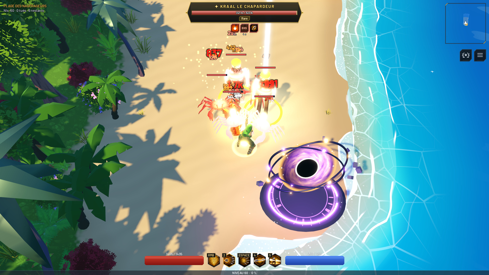

La Côte des Naufrageurs
Un quatrième acte au bord de la mer, une île refaite, les attributs, des arbres de talents repensés et un nouvel écran titre.
Un quatrième acte au bord de la mer, une île refaite de fond en comble, des arbres de talents repensés et un tout nouvel écran titre. Bonne traversée !
La Côte des Naufrageurs
Cinq zones de plages, de gués et de lagons, avec enfin du relief, jusqu'à la carcasse d'un galion échoué parcourue de la proue à la poupe. Trois boss, dont le redoutable Capitaine Barbe-Cendre.

L'île de Hautecrête
Le refuge devient une vraie île tropicale : vagues et écume, traces de pas dans le sable, feu de camp, barques qui tanguent et un ponton où se promener.

Force, Dextérité, Intelligence
Chaque point d'attribut donne +0,5 % de dégâts aux compétences qui le portent. Les attributs apparaissent sur les objets, dans les talents et la fiche du personnage, avec cinq légendaires construits autour d'eux.
Cauchemars et écran titre
Quatre paliers de Cauchemar plus longs, jusqu'au niveau 100. Un nouvel écran titre animé, au choix Braises ou Cendres, et une nouvelle police nette à toutes les résolutions.
Notes de version
Acte IV : la Côte des Naufrageurs
- Cinq nouvelles zones (niveaux 45 à 57) : plages, gués à traverser à pied, lagons, rochers et la carcasse d'un galion échoué que l'on parcourt de la proue à la poupe.
- Le terrain a enfin du relief : on monte sur les dunes, on descend dans l'eau jusqu'aux genoux, on emprunte des passerelles.
- Nouveaux ennemis : matelots requins, crabes des récifs, flibustiers… et des ailerons qui tournent autour des gués.
- Trois nouveaux boss : le Roi Pince-d'Écume, Mâchoire le maître d'équipage et le redoutable Capitaine Barbe-Cendre.
L'île de Hautecrête
- Le refuge devient une vraie île tropicale : mer animée avec vagues et écume, sable mouillé, traces de pas, feu de camp crépitant, palmiers, barques qui tanguent et un ponton où l'on peut se promener.
- Le mannequin d'entraînement a son propre îlot, relié par un pont.
Cauchemars et campagne
- Quatre paliers de Cauchemar au lieu de dix, mais plus longs : chaque palier reprend toute la campagne et le niveau des zones monte d'un acte à l'autre (Cauchemar I : niveaux 58 à 73… jusqu'au niveau 100).
- Les actes se débloquent dans l'ordre : impossible de sauter directement à l'acte III avec un nouveau personnage.
Force, Dextérité et Intelligence
- Trois nouveaux attributs : chaque point donne +0,5 % de dégâts aux compétences qui portent cet attribut (Force pour le Fendoir, Intelligence pour la Boule de feu, Force et Dextérité pour le Tourbillon…).
- Ils apparaissent sur les objets, dans les arbres de talents et dans la fiche du personnage ; l'infobulle de chaque compétence indique ses attributs et le bonus actuel.
- Cinq nouveaux légendaires construits autour des attributs : Ceinture du Lutteur, Couronne de l'Érudit, Foulée du Renard, Poigne du Titan et Anneau des Trois Voies.
Arbres des dieux
- Les petits nœuds donnent des dégâts génériques : un arbre reste utile après une conversion d'élément.
- Les nœuds qui réduisent le coût en mana sont désormais dès le début de chaque arbre.
- Une trentaine de nouveaux effets pour les nœuds de fin et les talents majeurs, qui mêlent toujours attaque et défense : Cri de guerre, Riposte, Embuscade, Colosse, Dos au mur, Transfusion, Garde rapprochée…
- Gardien du Bastion : votre armure et vos blocages deviennent des dégâts. Alchimiste : moins centré sur les élixirs, votre régénération nourrit vos coups.
- Les talents majeurs affichent leur icône une fois choisis.
Légendaires et objets
- Les légendaires agissent sur des familles entières : le Cœur de Phénix enflamme tous vos dégâts de feu, l'Aube Jumelle fait frapper deux fois n'importe quelle attaque de mêlée…
- Les légendaires qui n'avaient pas d'effet propre en ont reçu un.
- Plus d'affixes Spéciaux et Ultimes à forger, dont un nouvel ultime rare qui réduit la réservation des auras (casque et torse).
- Cadres de rareté bien visibles dans l'inventaire et l'équipement : on repère un légendaire d'un coup d'œil.
Personnages
- Visages corrigés (ils prenaient la couleur de la classe) et tenues aux couleurs de chaque classe.
- Nouveaux bâtons, baguettes et sceptres pour les lanceurs de sorts.
- Un emblème pour chaque classe et une icône pour chaque passif.
- Icônes dédiées pour tous les talents, ascendances et effets actifs (plus de cases vides dans la barre d'effets).
Écran titre et sélection
- Nouvel écran titre animé, avec deux ambiances au choix : Braises ou Cendres. Les écrans de chargement suivent le thème choisi.
- Animations d'entrée, transition vers la sélection de personnage et socle lumineux aux couleurs de votre classe.
- La fiche du personnage montre votre progression (« Acte 2 · Cauchemar I ») et votre passif, aussi pendant la création.
- Les notes de version sont lisibles directement depuis l'écran titre.
Interface
- Nouvelle police, nette à toutes les résolutions.
- Les élixirs affichent leurs charges sur la barre de compétences, comme une recharge.
- Forge plus large : plus aucun texte coupé dans les résultats possibles.
- Onglets qui ne sautent plus au survol, infobulles allégées, bouton Forger mis en valeur.
- En plein écran, la résolution choisie s'applique au rendu du jeu.
Équilibrage
- Une aura qui ferait réserver plus de 100 % de votre mana se désactive au lieu de vous laisser à sec.
- Tourbillon : vitesse de départ réduite, mais chaque tour de canalisation augmente la vitesse et la zone.
- Écrasement étourdit moins souvent ; Fortification et Fragilité fonctionnent comme annoncé.
- Combattre à mains nues en début de partie n'est plus une punition.
- Les élixirs se débloquent pour votre personnage dès que vous les trouvez ; reboire réinitialise leur durée.
Corrections
- L'arbre de classe pouvait afficher 8/7 points et bloquer un point : corrigé.
- Certains bonus temporaires des talents ne s'arrêtaient jamais.
- Le Porte-Peste n'avait plus son apparence.
- La barre de cible ne clignote plus et la barre de vie ne provoque plus d'erreur à la mort.